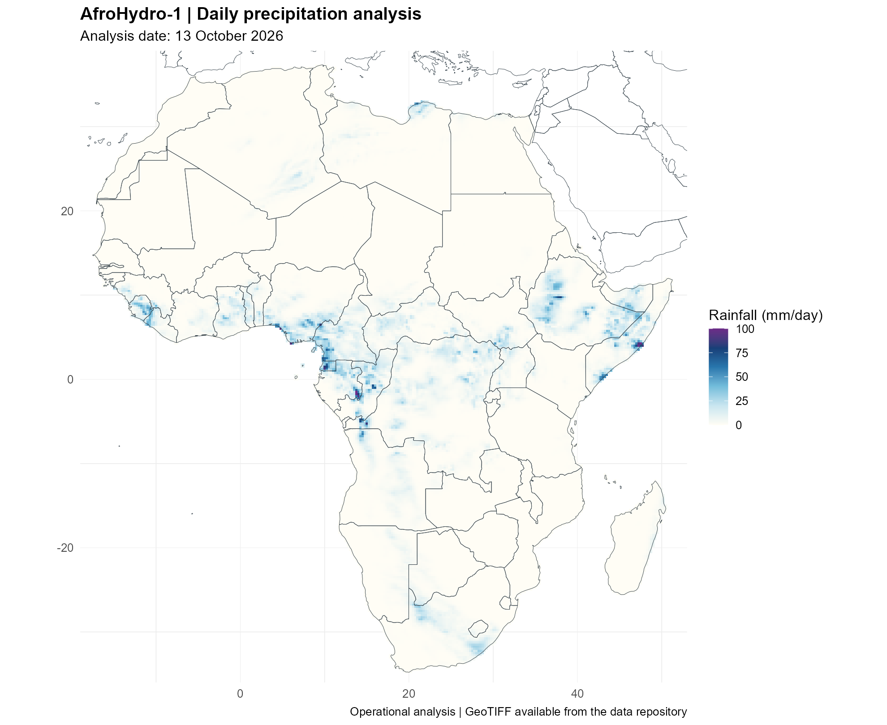

AfroHydro-1 Daily Rainfall
Latest operational precipitation analysis over Africa.
Loading latest analysis date…

The map is a visualization; download the GeoTIFF for scientific analysis. Daily production is subject to operational availability.